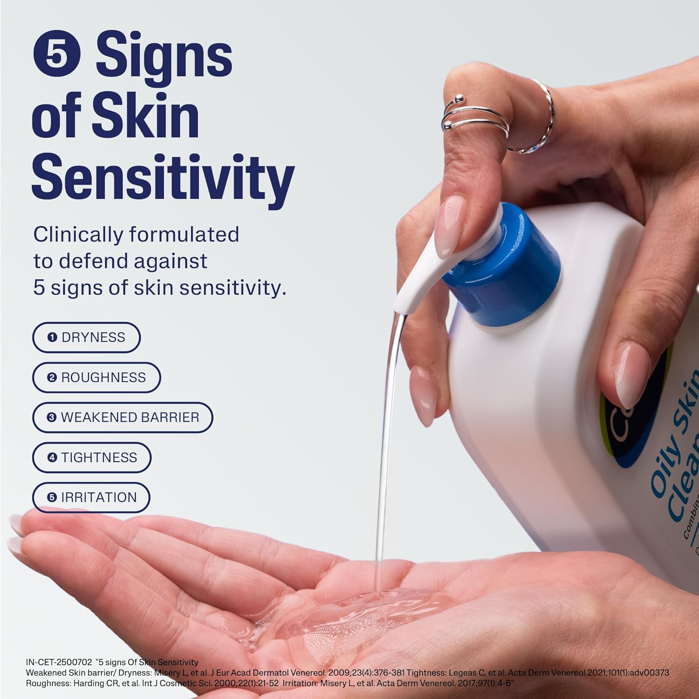

Oily Skin Cleanser
Inclusive of all taxes (236ml)
"Scientific care for oily skin that respects your natural barrier."
Designed specifically for oily and acne-prone skin, this **Daily Face Wash** removes excess oil, dirt, and makeup without leaving the skin dry or tight. The gentle foaming action deep cleanses pores while preserving the skin’s essential lipids, making it a staple for anyone struggling with shine.
As an Amazon Associate, I earn from qualifying purchases.
Why We Love It
It’s the "gold standard" for a reason. Unlike many oily skin cleansers that are too harsh, Cetaphil manages to cut through grease while keeping the skin incredibly calm. It’s effective enough to prevent breakouts but gentle enough to use twice a day without irritation.
How to Use
- 01 Wet your face and hands with lukewarm water.
- 02 Massage a small amount onto the skin in gentle circles.
- 03 Rinse thoroughly and pat dry with a soft towel.
Who It's For
- Oily, combination, and acne-prone skin types.
- Anyone looking for a dermatologically tested, soap-free wash.
- Ideal for those who want to reduce shine without stripping moisture.